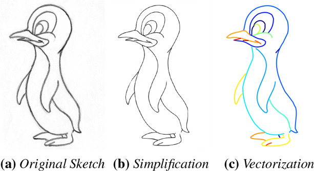
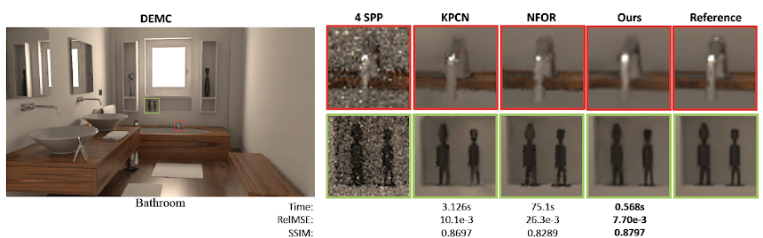
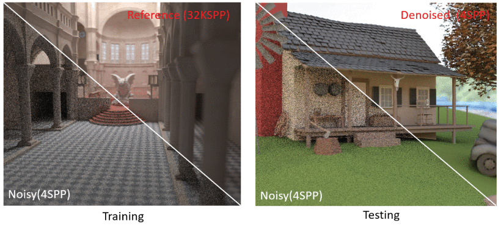

Mononizing Binocular Videos
Wenbo Hu, Menghan Xia, Chi-Wing Fu, and Tien-Tsin Wong
ACM Transactions on Graphics (ACM TOG), SIGGRAPH Asia, 2020
[ Project]
[ Paper]
[ Code ]

HU, Wenbo (胡文博)
Ph.D. Candidate (since Fall 2018)
Dept of Computer Science & Engineering
The Chinese University of Hong Kong
About Me
I am a Ph.D. candidate in Department of Computer Science and Engineering, The Chinese University of
Hong Kong (CUHK),
supervised by Prof. WONG, Tien-Tsin.
Before that I received my bachelor degree in Computer Science and Engineering from Dalian University
of Technology (DUT) in 2018, supervised by Prof.
YANG, Xin.
My research interests include: Computer Graphics, Computer Vision and Deep Learning.
News!
[Mar. 2021]
One paper conditionally accepted to CVPR 2021 (Oral).
[Aug. 2020]
One paper conditionally accepted to SIGGRAPH Asia 2020.
[Aug. 2018]
I start my Ph.D study at CUHK.
[Jan. 2018] I will work as a research intern atSenseTime.
Publications


Deep Line Drawing Vectorization via Line Subdivision and Topology Reconstruction
Yi Guo, Zhuming Zhang, Chu Han, Wenbo Hu, Chengze Li, Tien-Tsin Wong
Computer Graphics Forum (CGF), Pacific Graphics (PG), 2019
[ Paper]
Yi Guo, Zhuming Zhang, Chu Han, Wenbo Hu, Chengze Li, Tien-Tsin Wong
Computer Graphics Forum (CGF), Pacific Graphics (PG), 2019
[ Paper]


Fast Reconstruction for Monte Carlo Rendering Using Deep Convolutional Networks
Xin Yang, Dawei Wang, Wenbo Hu, Lijing Zhao, Xinglin Piao, Dongsheng Zhou,
Qiang Zhang, Baocai Yin, Qiang Cai, Xiaopeng Wei
IEEE Access, 2018
[ Paper]
Xin Yang, Dawei Wang, Wenbo Hu, Lijing Zhao, Xinglin Piao, Dongsheng Zhou,
Qiang Zhang, Baocai Yin, Qiang Cai, Xiaopeng Wei
IEEE Access, 2018
[ Paper]
Activities
- Hello World!
Contact
Email: wbhu@cse.cuhk.edu.hk.